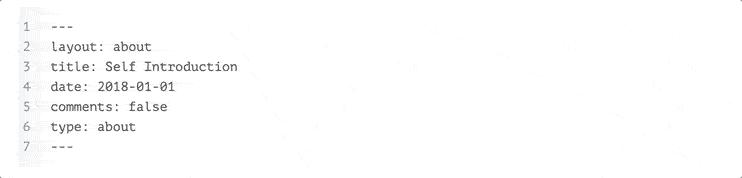
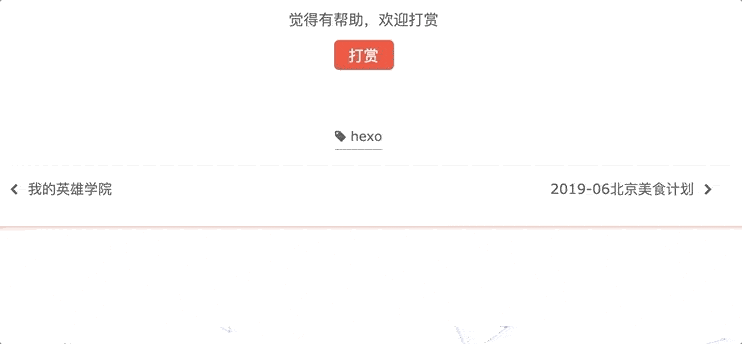
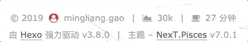
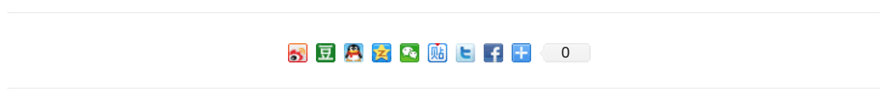
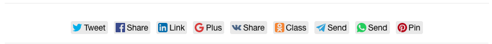
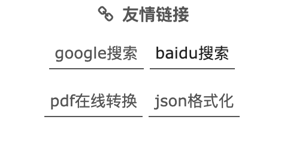
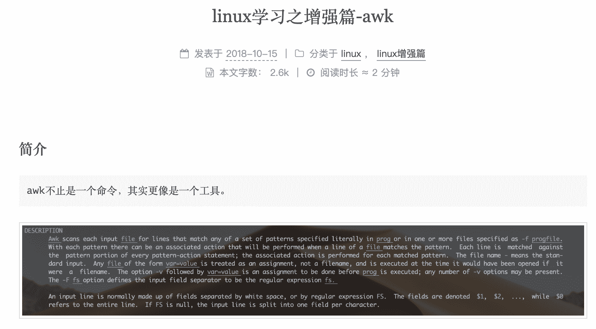
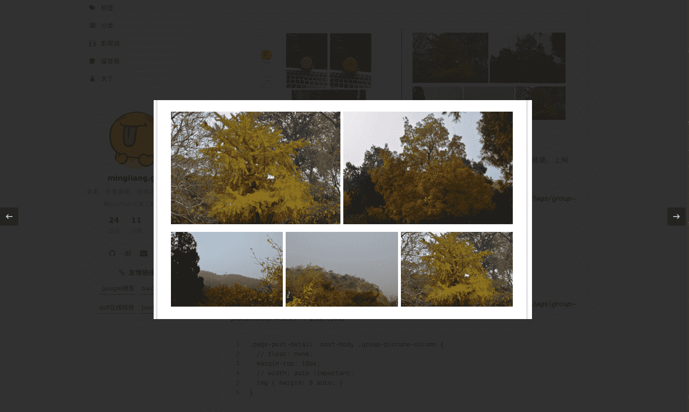
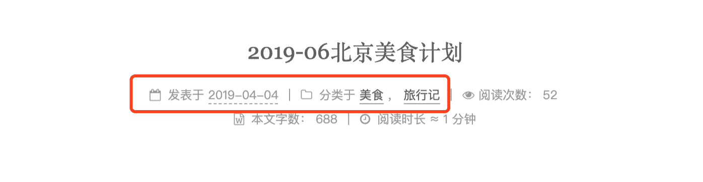

问题简述
My blog 采用Hexo + Next搭建，搭建完之后，看页面居然还是英文，好ugly，身为一名程序猿怎么可以忍呢。在持续一个月的捣鼓中，总结出Next一些通过配置优化的点。

版本信息
| id | name | version | remark |
|---|---|---|---|
| 1 | Hexo | v3.8.0 | 系统版本 |
| 2 | NextT.Pisces | v7.0.1 | 主题版本 |
| 3 | ATOM | 1.34.0 | 编译器 |
| 4 | Theme | Gemini |
优化Catalog
- 切记config文件冒号“：”后面一定要有一个空格
- 修改后重启服务：hexo g && hexo server -p 8888 –debug
Blog站点配置
位置：blog/_config.yml
hexo自带的config.yml，不是next主题的，看好了1
2
3
4
5
6
7
8# 基本信息配置 Site
title: PyGo²
subtitle: 一个爱老婆的python程序猿。。。。。。
description: 直男，双鱼星座，现居北京，去哪儿网python开发工程师。
keywords: python
author: mingliang.gao
language: zh-CN # 🌟页面的语言设置
timezone: Asia/Shanghai #时区Next风格设置
位置：blog/theme/next/_config.yml
打开配置文件，搜索Schemes，更改配置如下：1
2
3
4
5# Schemes 主题风格
# scheme: Muse
# scheme: Mist
scheme: Pisces
# scheme: Gemini菜单栏
位置：blog/theme/next/_config.yml
打开文件，格式：Key: Path || Icon，不想要的#禁止掉1
2
3
4
5
6
7
8
9
10
11
12
13
14
15menu:
home: / || home
archives: /archives/ || history
tags: /tags/ || tags
categories: /categories/ || list
movie: /categories/影视说 || film
messagepad: /messagepad/ || sticky-note
about: /about/ || user
# schedule: /schedule/ || calendar
# sitemap: /sitemap.xml || sitemap
# commonweal: /404/ || heartbeat
menu_settings:
icons: true # 是否显示图标
badges: true # 是否显示分类、标签、时间轴所包含内容个数about页面
终端（mac推荐使用zsh + item2）回到blog的根目录，运行：hexo new page about，在blog/source下会自动建立about文件夹，编辑里面的index.md，配置如下：
1
2
3
4
5
6
7---
layout: about
title: Self Introduction
date: 2018-01-01
comments: false
type: about
---
现在可以使用atom去写关于自己的描述了（markdown语法，不知道的请自行恶补）
Tags
根目录运行：hexo new page tags，配置如下：1
2
3
4
5
6---
title: 标签
date: 2019-03-17 13:58:44
type: "tags"
comments: false
---
Catalog
根目录运行：hexo new page tags，配置如下：1
2
3
4
5
6---
title: 分类
date: 2019-03-17 13:58:10
type: "categories"
comments: false
---
tags和categorise页面不用设置样式，自动生成，之所以与about页面分开，我觉得虽然建立的方式一样，但是内容根本不一个东西，每篇文章设置对应的即可，栗子如下：1
2
3
4
5
6
7
8
9
10---
title: 程序猿七夕-心心相印
comments: false
date: 2018-8-13 14:19:57
updated: 2018-8-13 17:19:57
desc: 程序猿七夕-心心相印
categories:
- [python]
tags: [python]
---
设置创建文章同名文件夹
位置：blog/_config.yml
打开配置文件，搜索post_asset_folder，更改配置如下：1
2default_layout: post # 默认创建文件分类
post_asset_folder: true
开启之后，在创建文章hexo new XXXX，同时也会出现一个同名的文件夹用来存放相关的图片。
个人头像设置
设置侧边栏头像，准备好头像图片，可以是png、jpg、gif等，本人用的动态gif图片。然后，将图片放在/blog/themes/next/source/images/文件夹下。
位置：blog/theme/next/_config.yml，搜索avatar，更改配置如下：1
2
3
4url: /images/timg.gif # 图片存放位置
rounded: true #设置图片是否为圆形，当图片为正方形时为圆，否则为正方形
opacity: 1 #图片的透明度
rotated: true #设置鼠标移到图片上是否转动
在Next主题配置文件中，搜索social，设置相对应的社交信息，格式：网站名: 网址 || 图标（英文“:”）。
图标选取地址：自选图标
菜单栏的个人社交信息设置
1 | social: |
社交信息图标设置
1 | social_icons: |
修改模版
位置：blog/scaffolds/post.md
打开上述文件，修改代码如下：1
2
3
4
5
6
7
8
9---
title: {{ title }}
desc:
date: {{ date }}
updated: {{ date }}
categories:
tags:
comments: false
---
- title：文章标题
- desc：文章的简述
- date：文章创建时间
- updated：文章修改时间
- categories：文章分类
- tags：文章标签
- comments：是否启用评论功能，默认关闭
代码添加复制功能
位置：blog/theme/next/_config.yml
打开配置文件，搜索Button，更改配置如下：1
2
3
4
5
6codeblock:
border_radius: 0 # 复制功能button边框
copy_button:
enable: true # 是否启用复制功能呢
show_result: true # 是否显示复制结果
style: # 设置flat，样式超难看
默认按钮显示复制，若是想改为英文copy，打开blog/themes/next/languages/zh-CN.yml文件中，将下面部分改了即可：1
2
3copy_button: 复制
copy_success: 复制成功
copy_failure: 复制失败

文章设置打赏
位置：blog/theme/next/_config.yml
打开配置文件，搜索reward_settings，更改配置如下：1
2
3
4
5
6
7
8
9reward_settings:
enable: true # 是否启用打赏功能
animation: true # 支付名称支付有动画效果
comment: 觉得有帮助，欢迎打赏 # 贡献说明
reward:
wechatpay: /images/wechatpay.png # 微信
alipay: /images/alipay.png # 支付宝
# bitcoin: /images/bitcoin.png # 比特币

footer设置
位置：blog/theme/next/_config.yml
打开配置文件，搜索footer，更改配置如下：1
2
3
4
5
6
7
8
9
10
11
12
13
14
15footer:
# 底部user图标
icon:
name: user-circle # icon名称
animated: true # 是否启用动画效果
color: "#FF0000" # 图标颜色
copyright: # 底部hexo版本信息显示设置
powered:
enable: false # 是否显示hexo版本信息
version: true
theme: # 底部hexo版本信息显示设置
enable: false # 是否显示next版本信息
version: true
图标选取地址：https://fontawesome.com/v4.7.0/icons/

访问人数和总访问量
位置：blog/theme/next/_config.yml
打开配置文件，搜索busuanzi_count，更改配置如下：1
2
3
4
5
6
7
8busuanzi_count:
enable: true # 是否启用统计功能
total_visitors: false # 网站总的访问人数，底部展示
total_visitors_icon: user # 网站总的访问人数icon
total_views: false # 网站总的访问次数，底部展示
total_views_icon: eye # 网站总的访问次数icon
post_views: true # 阅读次数，文章标题下展示
post_views_icon: eye # 阅读次数icon动态背景Canvas
位置：blog/theme/next/_config.yml
canvas-nest：https://github.com/theme-next/theme-next-canvas-nest
three_waves：https://github.com/theme-next/theme-next-three
具体步骤github上有详解
打开配置文件，搜索Canvas-nest，更改配置如下：1
2
3
4
5
6
7
8
9
10
11
12
13
14
15
16
17# Canvas-nest 背景效果
canvas_nest:
enable: true
onmobile: false # display on mobile or not
color: "0,0,255" # RGB values, use ',' to separate
opacity: 0.5 # the opacity of line: 0~1
zIndex: -1 # z-index property of the background
count: 199 # the number of lines
# JavaScript 3D library.
# Dependencies: https://github.com/theme-next/theme-next-three
# three_waves 背景效果
three_waves: false
# canvas_lines
canvas_lines: false
# canvas_sphere
canvas_sphere: false
特别指出three_waves配置只能选取一个，而且开启canvas-nest，three_waves之后，页面渲染的时间变长了，而且发现内存，cpu的使用率也加大了，所以我只开启了canvas-nest，根据自己的需求进行配置。
分享插件：baidushare
文章添加新浪、微信、贴吧等国内第三方分享，关于位置有button | slide2种选择。
位置：blog/theme/next/_config.yml
打开配置文件，搜索baidushare，更改配置如下：1
2baidushare:
type: button

分享插件：likely
文章添加twitter、facebook、linkedin等国际第三方分享，有需要的同学可以开启此功能。
位置：blog/theme/next/_config.yml
打开配置文件，搜索likely，更改配置如下：1
2
3
4
5
6
7
8
9
10
11
12
13likely:
enable: false
look: normal # available values: normal, light, small, big
networks:
twitter: Tweet
facebook: Share
linkedin: Link
gplus: Plus
vkontakte: Share
odnoklassniki: Class
telegram: Send
whatsapp: Send
pinterest: Pin

分享插件：NeedMoreShare2
配置文件新增了综合国内、国际分享，也是可以设置底部、侧边2种位置。
位置：blog/theme/next/_config.yml
打开配置文件，搜索NeedMoreShare2，更改配置如下：1
2
3
4
5
6
7
8
9
10
11
12
13
14
15
16needmoreshare2:
enable: false
postbottom:
enable: false
options:
iconStyle: box
boxForm: horizontal
position: bottomCenter
networks: Weibo,Wechat,Douban,QQZone,Twitter,Facebook
float:
enable: false
options:
iconStyle: box
boxForm: horizontal
position: middleRight
networks: Weibo,Wechat,Douban,QQZone,Twitter,Facebook

友情链接
位置：blog/theme/next/_config.yml
站点浏览添加友情链接，格式：名称: url(英文“:”)。打开配置文件，搜索Blog rolls，更改配置如下：1
2
3
4
5
6
7
8
9links_icon: link # 图标
links_title: 友情链接 # 标题
# links_layout: block # 链接样式 块样式
links_layout: inline # 行样式
links: # 内容
google搜索: https://www.google.com
baidu搜索: https://www.baidu.com
pdf在线转换: https://smallpdf.com/cn
json格式化: https://www.json.cn/

位置：blog/theme/next/_config.yml
打开配置文件，搜索auto_excerpt，更改配置如下：1
2
3auto_excerpt:
enable: true
length: 200
设置完之后，首页预览每个markdown格式，不建议使用。
more
在文章需要进行预览的地方，加入如下代码：1
<!-- more -->
建议使用，格式、图片等不受影响。
文章首页图片展示
首页文章设置预览用more去进行处理，当在预览中加入图片时，图片链接会去blog>public>images目录下去寻找对应的图片，打开文章又回去文章对应的目录>images目录下去找。
所以，当文章预览中有图片显示的文章，在文章的目录下手动建立一个images文件夹，把图片分别存放在当前images文件夹以及blog>public>images文件夹下。这样就OK了。

不过有个问题，首页如果分页显示，那么首页预览图片寻找的路径会发生改变。所以我在前面设置文章预览个数index_generator的时候设置为0，这是我的解决方法，如果大家有好的解决方案，欢迎大家留言交流。
博文添加图片查看器
首先，下载fancybox插件，有2个版本，我选择了最新版3。1
2cd themes/next
git clone https://github.com/theme-next/theme-next-fancybox3 source/lib/fancybox
位置：blog/theme/next/_config.yml
打开配置文件，搜索fancybox，更改配置如下：1
fancybox: true
fancybox官网：https://github.com/theme-next/theme-next-fancybox3

页面浏览进度
设置页面的浏览百分比，打开配置文件，搜索scrollpercent，更改配置如下：
位置：blog/theme/next/_config.yml1
2
3
4
5
6back2top:
enable: true
# Back to top in sidebar.
sidebar: false # sitebar是否在工具栏
# Scroll percent label in b2t button.
scrollpercent: true # 浏览进度情况文章额外信息展示
在文章标题下面显示文章相关的额外信息，打开配置文件，搜索post_meta，更改配置如下：
位置：blog/theme/next/_config.yml1
2
3
4
5
6
7
8
9# Post meta display settings
# 文章创作时间、分类
post_meta:
item_text: true
created_at: true
updated_at:
enable: true
another_day: true
categories: true

修改访问URL路径
blog默认情况下访问URL路径为：domain/2017/08/18/title，打开配置文件，搜索permalink，更改配置如下：
位置：blog/_config.yml1
permalink: :category/:title/
配置完，重启一下server，回到主页在进行文件查看，发现地址发生改变
设置博客favicon图标
修改博客favicon图标，打开配置文件，搜索apple_touch_icon，更改配置如下：
位置：blog/theme/next/_config.yml1
2
3
4
5favicon:
small: /images/favicon16.ico
medium: /images/favicon32.ico
apple_touch_icon: /images/apple-touch-icon-next.png
safari_pinned_tab: /images/logo.svg修改文章底部的#号标签
打开/themes/next/layout/_macro/post.swig，搜索rel=”tag”>#，将#换成下列代码:
1
<i class="fa fa-tag"></i>
注意
- 配置完Hexo config需要重启server，next config重新刷新即可。
学习
hexo官方配置手册：https://hexo-guide.readthedocs.io/zh_CN/latest/index.html
hexo图标选取地址：https://fontawesome.com/icons
结束
本篇内容主要解决Hexo、Next相关config配置文件的优化，内容持续更新中，如有bugs，欢迎大家评论指出。
待续。。。。。。（未完结）
学会分享，一起进步